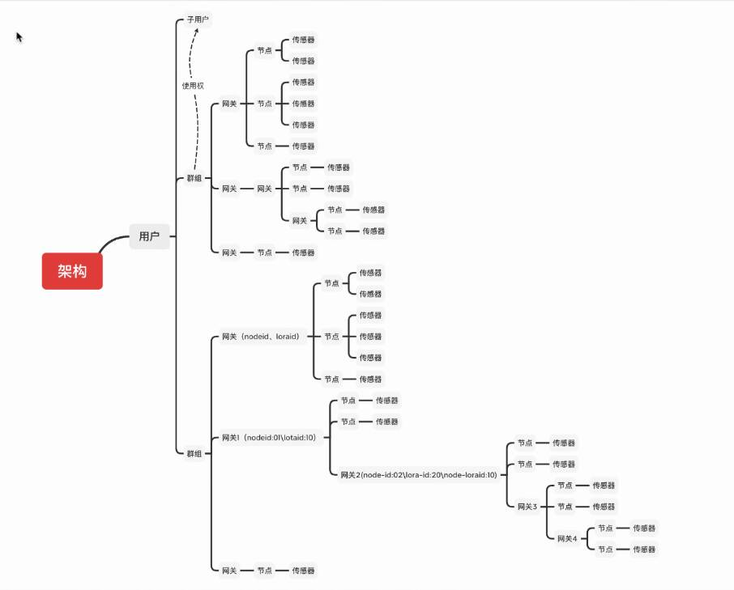

数据结构
Data Structure
树
这里我们暂时不去想设计模式那样,深究数据结构相较于计算机的意义,并且这个也不是我们这次考核的重点
其实是我搞不完了,设计模式的内容还是我半夜赶的稿
- 任务是要用任何一种熟悉的编程语言
- 通过抽象的逻辑关系,在控制台中打印
- 可以通过迭代，也可以通过递归,whatever you want
- 确保即插即用?
- 其实树能扯的东西特别多,用处也特别多,
- 但碍于时间限制,以及这次考核的限制....
- 或许下次考核的重点就是数据结构
这样我就有时间去深入挖掘,好像是在为我的懒惰找借口
树

栈,队列
先看两个小小的算法
- 深度优先搜索
- 广度优先搜索
栈和队列与这两个算法有什么关系?
貌似这里我如果实现一个可以在线画图的库,就可以直接画出深度优先搜索的算法,计划表上有多了一项不知道什么时候才能完成的任务
深度优先搜索

-
深度优先,顾名思义先沿一条路走到黑,走完再回来走另一条路,
如果走不完那就不回来 -
那右侧节点的顺序就可以是
- 1
- 2->5->9
- 3->6->10,
- 7,
- 4->8
深度优先搜索
- 那这跟队列和栈有什么关系？
- 如果不用递归或者说,用迭代来模拟递归 -> 2,3,4同时被挑出来,却将2的整个一支执行后才轮到3,4
- 这似乎有点关系,如果将2的孩子跟3,4做比较
- 3,4是先被选,2的孩子是后选,先选后执行,后选先执行......

广度优先搜索
- 与其是一个顺序关系,不如说是一个制约关系,后面的子孩子执行完才能执行前面的兄弟节点
- 好像需要设置一个能实现先来后处理,后来先处理的容器.....
- 有了深度的例子,广度似乎好像也是这样
- 1->2->3->4->5->6->7->8->9->10
- 有点像层次遍历?
- 对比于深度,似乎是按层级顺序或者是先后顺序?先选的先执行

优先搜索
- 我们好像什么也没说,但是什么都说了
- 我们是似乎可以用一个无环状态图来表示执行顺序
- 偶然间发现其实这些数据结构做的好像就是一件事 --> 描述任务的执行顺序
- 可能任务有点具体了，如果我们将这些执行顺序写成一个三元组,四元组
- (10,A,G)->(9,B,E),并且我们给其用一个更加逻辑化的词语---状态
- 状态的改变,状态的转移,状态的传播,状态的依赖
- 程序是一个状态机......
- 好像发现了什么不得了的东西
图
刚才,似乎有一个程序是状态机的一个概念,
那这跟图又有什么关系?
如果我们将图的概念简化一点,将图认为是有一个个点节点和边连接的一个结构
好像我们前面树的图也是这么画的,好像链表也可以这么画,似乎队列和栈也可以
似乎这些数据结构都在处理一件事情,程序是一个状态机?
如果我们将节点当作是一个状态,一条边当作是一个能引起状态变化的操作
嗯? 好像又想起了一句话:程序 = 数据结构 + 算法
如果将数据结构描述为状态的集合,算法当作边的处理,似乎这两句话是一个意思!!!
图
意识到上面一点后,图这里能说的好像更多了,但这次图这里我们就先到这里
这次考核主要的目的还是理解 "数据结构"
其实就是我没时间了,现在都已经是半夜了,挖的坑太多.....